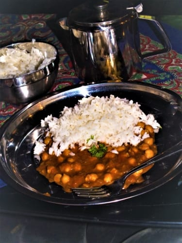
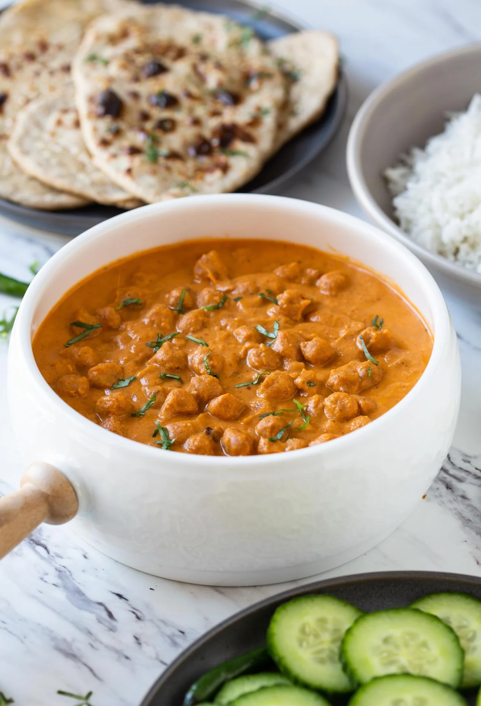
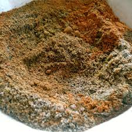

Chicken tikka masala is without doubt one of the best meals ever concieved. For everyone ethically concious, this vegan version with chickpeas is even better. I recomend basmati rice as side-dish, which fits the tomato-ish sauce perfectly. Just like a goulash, leave whatever you don't gobble up immediately in the fridge overnight, and its spices make it mature to a food worthy of sacrifice for the Indian pantheon.
- 400g of passata
- 1 can of chickpeas
- (130g of cocounut yoghurt)
- 80ml of cocount milk
- 100ml of water
- (4tbsp of sugar)
- 2tbsp of garam masala spice mix
- 2tbsp of margharine
- 2 cloves of garlic
- 1-2tbsp of corn starch
- 2 and 1/2tsp of salt
- 2tsp of ground cumin
- 1/2tsp of black pepper
- 1/2tbsp of lemon juice
- 1/2tsp of ground coriander
- 1tsp of grated ginger
- 1 onion
- Peel the onion and garlic and dice both
- Mix the spices in a bowl
- Heat up a large pan and margharine, fry onion and garlic for a few minutes, then add the spice mix. Fry for 2 more minutes to let the fragrance rise.
- Add the passata, grated ginger, lemon juice, water and coconut milk. (Also add the sugar if you choose to use it). Cover the pan and cook for 20 minutes, stirring occasionaly
- Add the chickpeas
- When the sauce is finished, you can add corn starch mixed in some water to make the sauce thicker. Cook for a few more mintes.
- Turn off the heat and mix in the yoghurt.
- Serve with basmati rice or naan.